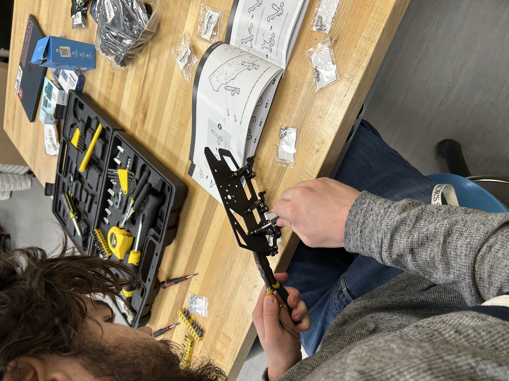
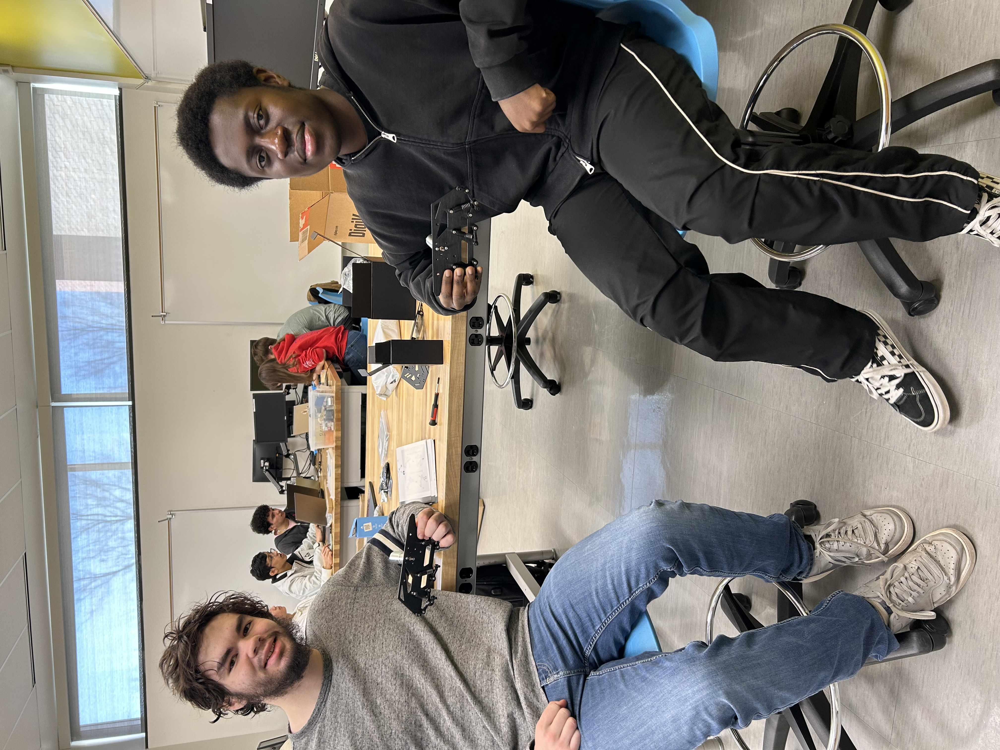
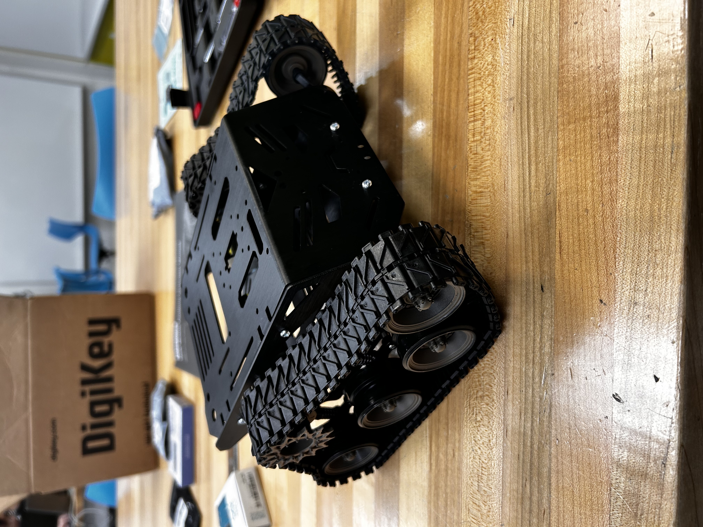
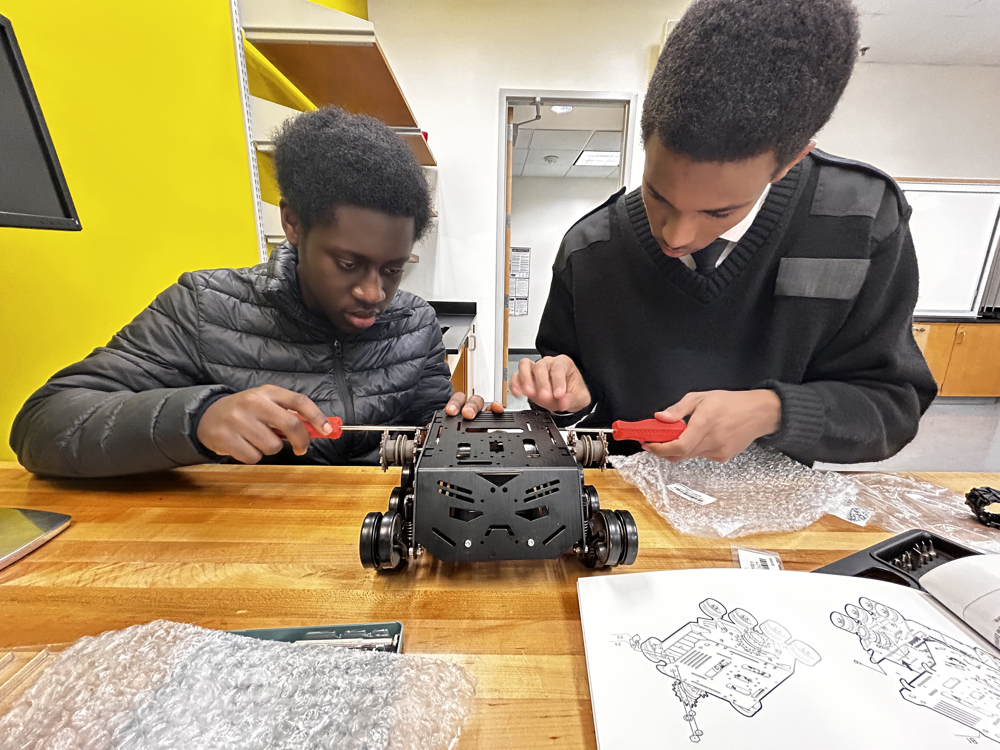
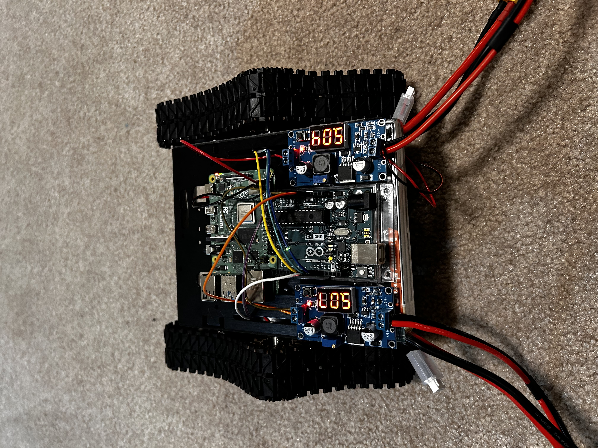

Dylan assembles the rover's suspension and chassis components

Dylan and Brendan showing off early chassis progress

The completed ARtPUT rover chassis, fully assembled

Brendan and Bokre working together to secure the rover's drivetrain
 Testing the rover's power regulation system and battery connections
Testing the rover's power regulation system and battery connections

All electronic components connected